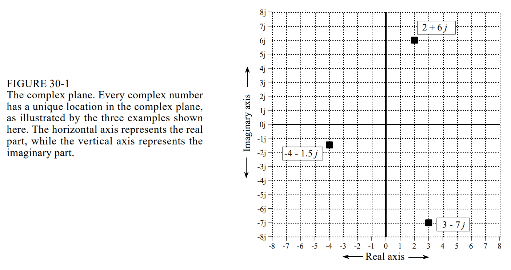
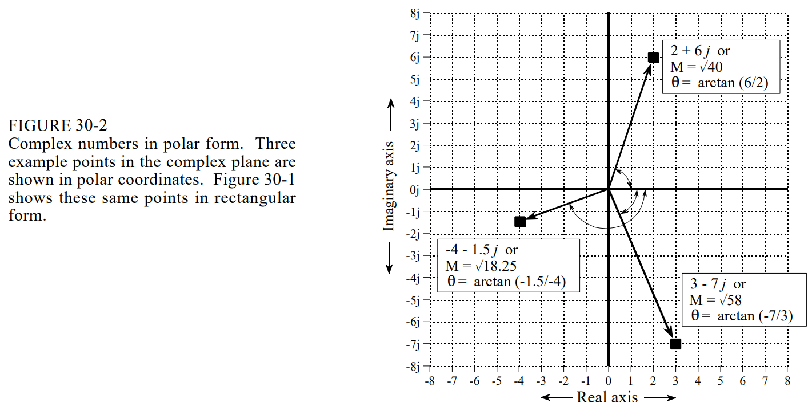
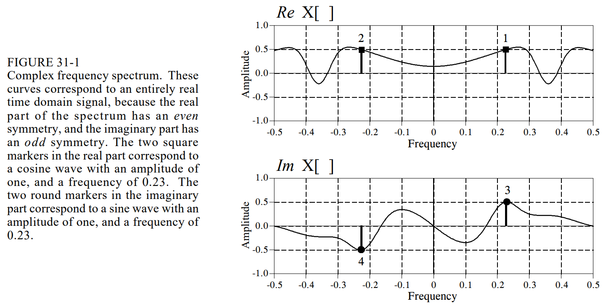
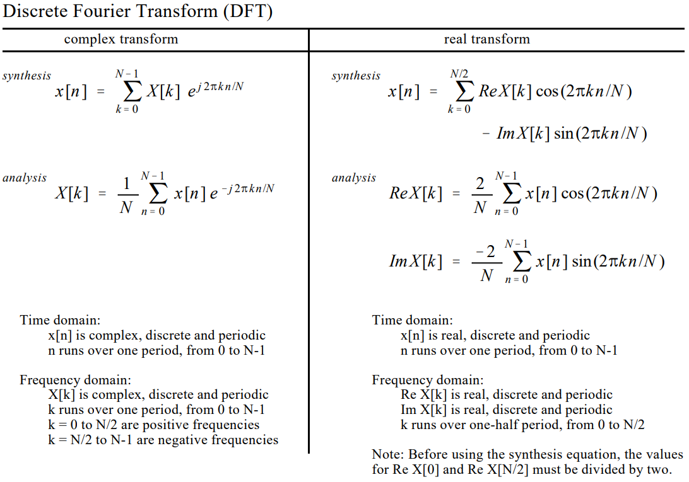
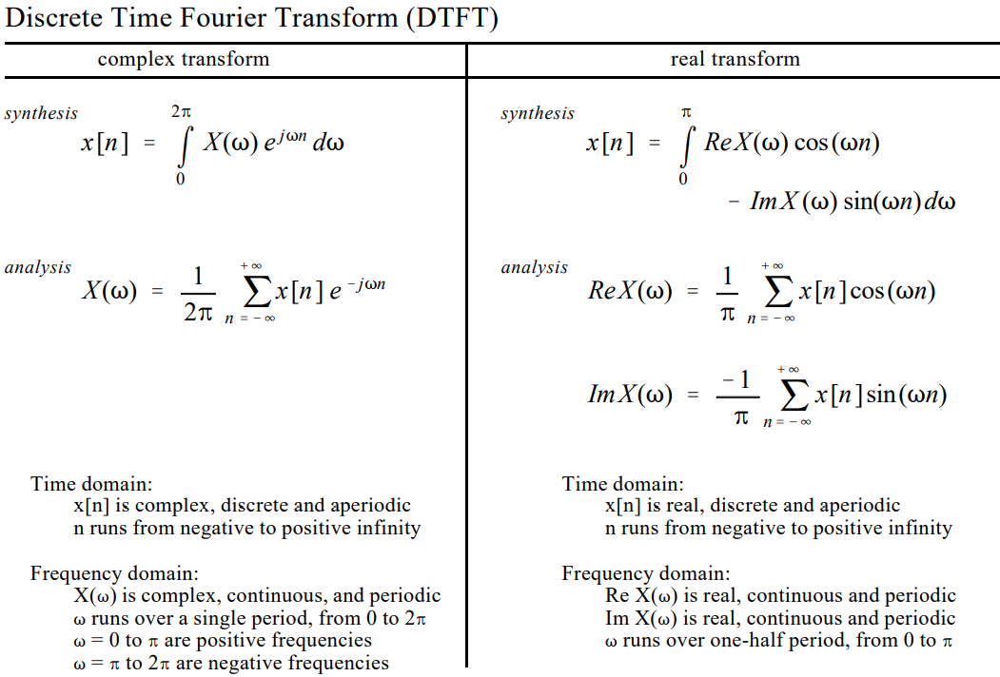
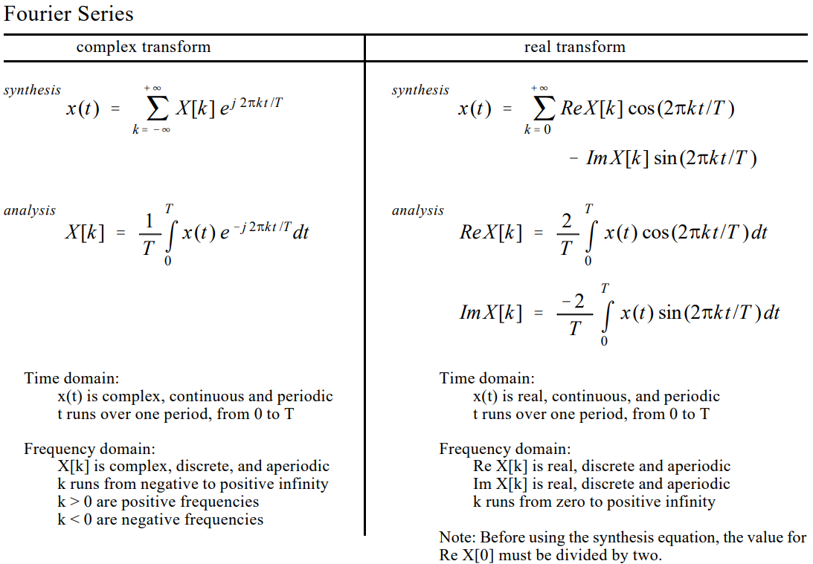
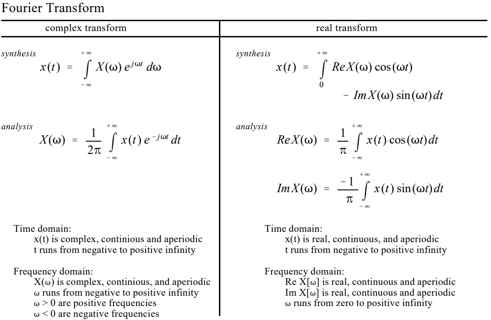
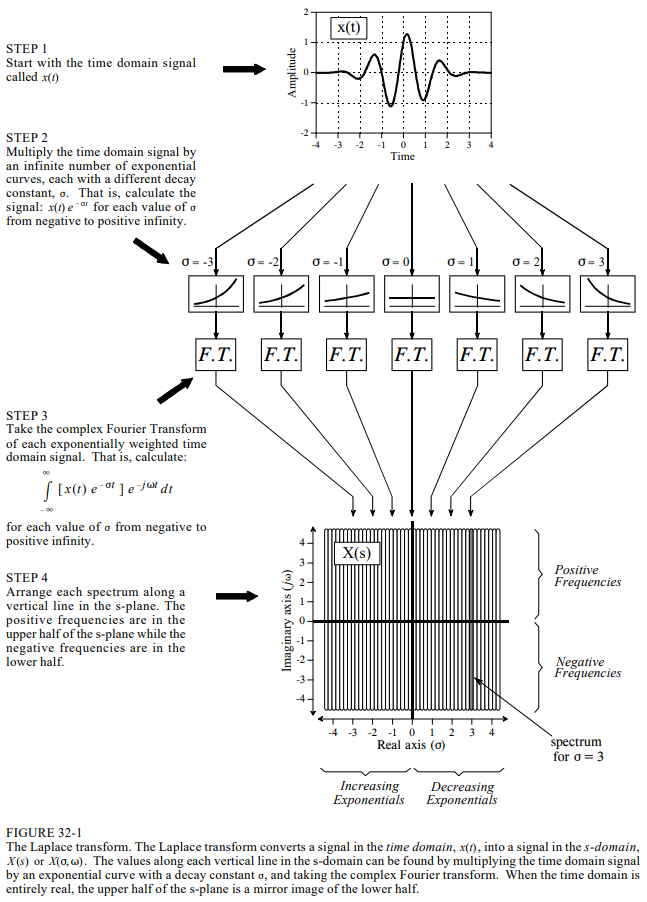
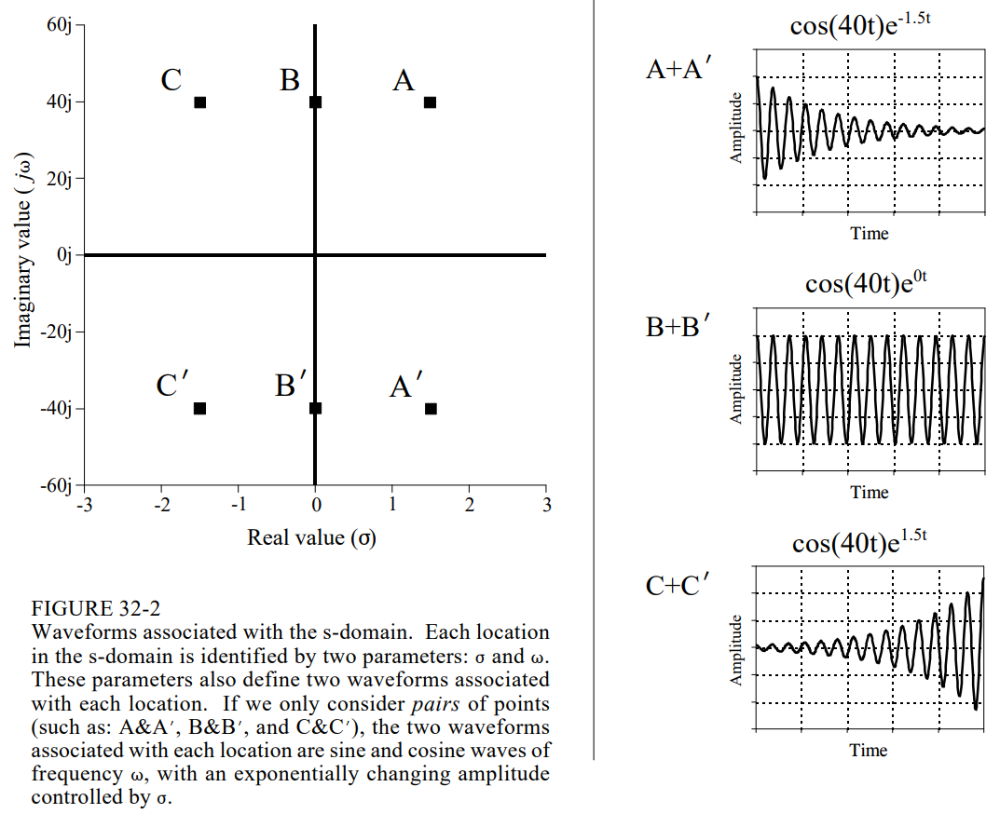
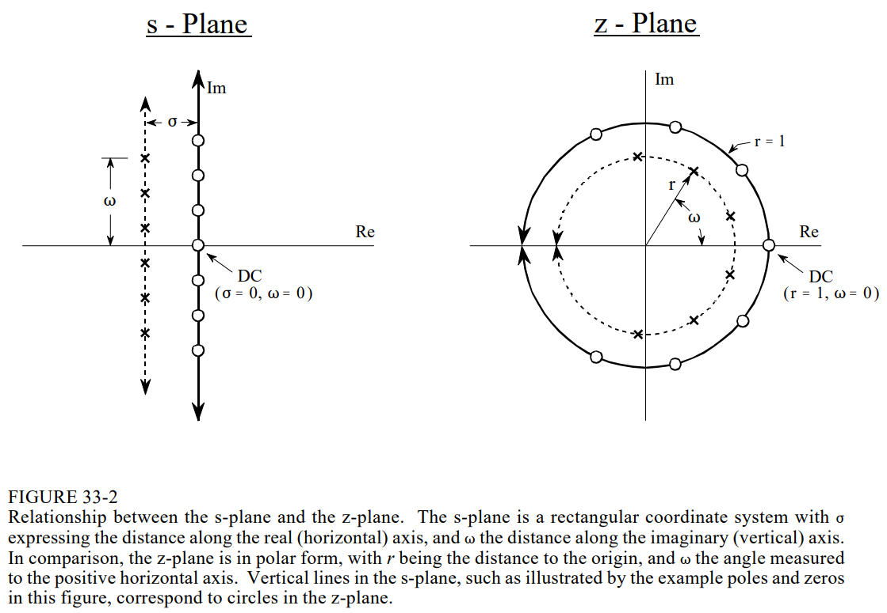

Guide to DSP Pt. 3
Chapter 30: Complex Numbers
Complex numbers are an extension of ordinary numbers with the unique property of representing and manipulating two variables as a single quantity. This fits naturally with Fourier analysis, where the frequency domain is composed of both real and imaginary parts. Complex numbers shorten the equations used in DSP, and enable techniques that are difficult or impossible with real numbers alone.
Every complex number is the sum of two components, a real part and an imaginary part. The real part is a real number, and the imaginary number is the square root of a negative number, usually reduced to an ordinary number multiplied by the square root of $-1$ (solutions to common algebraic equations often contain the square root of a negative number). The imaginary part is usually reduced to an ordinary number multiplied by the square root of $-1$, allowing $\sqrt{-1}$ to be given a special symbol, $i$ or $j$.
Just as real numbers are described as having positions along a number line, complex numbers are represented on the complex plane, in which real numbers simply have an imaginary component (y-value) of $0$. The mathematical notation for separating a complex number into its real and imaginary parts uses the operators $Re()$ and $Im()$.

Complex numbers are added and subtracted element-wise, and multiplied as follows:
$$(a + bj)(c + dj) = (ac - bd) + j(bc + ad)$$
and divided as follows:
$$\frac{ (a + bj) }{ (c + dj) } = \left( \frac{ ac + bd }{ c^2 + d^2 } \right) + j \left( \frac{ bc - ad }{ c^2 + d^2 } \right)$$
Two tricks are used when manipulating equations such as these. First, whenever a $j^2$ term is encountered, it is replaced with $-1$. The second is a way to eliminate the $j$ term from the denominator of a fraction. The left side of the above division equation has a denominator of $c + dj$. This is handled by multiplying the numerator and denominator by the term $c - jd$, cancelling the imaginary terms from the denominator. This is called taking the complex conjugate, and is denoted by a $*$ at the upper right corner of the variable, such as $Z^* = a - bj$.
The commutative, associative, and distributive properties apply to complex numbers:
- Commutative: $AB = BA$
- Associative: $(A + B) + C = A + (B + C)$
- Distributive: $A(B + C) = AB + AC$
Polar Notation
Complex numbers can be expressed in polar or rectangular notation. In polar notation, the magnitude is the length of the vector starting at the origin and ending at the complex point, while the phase angle is measured between this vector and the positive x-axis. Complex numbers can be converted between rectangular and polar notation by the following equations.
Equation 30-8:
$$M = \sqrt{ (ReA)^2 + (ImA^2) }$$
$$\theta = arctan \left[ \frac{ImA}{ReA} \right]$$
Equation 30-9:
$$ReA = M ~cos(\theta)$$
$$ImA = M ~sin(\theta)$$

A complex number written in rectangular notation is in the form $a + bj$. In polar form, the key information is contained in $M$ and $\theta$, but what is the full expression for the proper complex number? They key to this is in the polar-to-rectangular conversion equation. If we start with the complex number, $a + bj$, and apply equation 30-9, we obtain:
Equation 30-10:
$$a + bj = M(cos \theta + j ~sin \theta)$$
The expression on the left is the proper rectangular description of a complex number, while the expression on the right is the polar description.
One of the most important equations in complex mathematics is Euler's relation:
Equation 30-11:
$$e^{jx} = cos ~x + j ~sin ~x$$
This relation can be proven by expanding the exponential term into a Taylor series.
$$e^{jx} = \sum_{n=0}^{\infty} \frac{(jx)^n}{n!} = \left[ \sum_{k-0}^{\infty}(-1)^k \frac{x^{2k}}{(2k)!} \right] + j \left[ \sum_{k-0}^{\infty}(-1)^k \frac{ x^{2k+1} }{ (2k+1)! } \right]$$
The two bracketed terms on the right of this expression are the Taylor series for $cos(x)$ and $sin(x)$.
Rewriting equation 30-10 using Euler's relation results in the most common way of expressing a complex number in polar notation, a complex exponential.
$$a + bj = Me^{j \theta}$$
An advantage of using this exponential polar form is that it makes it very simple to multiply and divide complex numbers.
$$M_1 e^{j \theta_1} M_2 e^{j \theta_2} = M_1 M_2 e^{j(\theta_1 + \theta_2)}$$
$$\frac{ M_1 e^{j \theta_1} }{ M_2 e^{j \theta_2} } = \left[ \frac{M_1}{M_2} \right] e^{j(\theta_1 - \theta_2)}$$
Complex numbers in polar form are multiplied by multiplying their magnitude and adding their angles. The easiest way to perform addition and subtraction in polar form is to convert the numbers to rectangular form, perform the operation, and convert back to polar notation. Complex numbers are usually expressed in rectangular form in computer routines, but in polar form when writing and manipulating equations.
Substitution takes two real physical parameters and places one in the real part of the complex number and one in the imaginary part. This allows the two values to be manipulated as a single entity. After the desired mathematical operations, the complex number is separated into its real and imaginary parts, which correspond to the physical parameters we are concerned with.
Complex Representation of Sinusoids
Complex numbers find a niche in electronics and signal processing because they are a compact way to represent and manipulate the most useful of waveforms - sine and cosine waves. The conventional way to represent a sinusoid is:
Polar Form:
$$M ~cos(\omega t + \Phi)$$
Rectangular Form:
$$A ~cos (\omega t) + B ~sin(\omega t)$$
Frequency is expressed by $\omega$, the natural frequency in radians per second. You can replace $\omega$ with $2 \pi f$ to make the expressions in Hertz.
Using substitution, the change from the conventional sinusoid representation to a complex number is:
$$A ~cos(\omega t) + B ~sin(\omega t) \Leftrightarrow a + bj$$
The amplitude of the cosine wave becomes the real part of the complex number, while the negative of the sine wave's amplitude becomes the imaginary part.
$$M ~cos(\omega t + \Phi) \Leftrightarrow Me^{j \theta}$$
where $M \Leftrightarrow M$ and $\theta \Leftrightarrow - \Phi$. The polar substitution leaves the magnitude the same, but changes the sign of the phase angle.
Using complex numbers to represent sine and cosine waves is a common technique in electrical circuit analysis and DSP because many (not all) of the rules and laws governing complex numbers are the same as the governing sinusoids. We can represent the sine and cosine waves with complex numbers, manipulate the numbers in various ways, and have the resulting answer match the way the sinusoids behave.
We must be careful to use only those mathematical operations that mimic the physical problem represented. Suppose we use complex variables $A$ and $B$ to represent two sinusoids of the same frequency, but with different amplitudes and phase shifts. When the two complex numbers are added, a third complex number is produced. A third sinusoid is created when the two sinusoids are added; the complex number represents the third sinusoid, and the complex addition matches the physical system. However, multiplying two sinusoids does not produce a third sinusoid, and in this case, complex multiplication does not match the physical system.
Fortunately, the valid operations are clearly defined. Two conditions must be satisfied. First, all of the sinusoids must be at the same frequency. If $1 + 1j$ and $2 + 2j$ represent sinusoids at the same frequency, then the sum is represented by $3 + 3j$. However, if $1 + 1j$ and $2 + 2j$ represent sinusoids at different frequencies, nothing can be done with the complex representation.
The second requirement is that the operations being represented must be linear. Sinusoids can be combined by addition and subtraction, but not multiplication and division.
When a sinusoid passes through a linear system, the complex numbers representing the input signal and the system are multiplied, producing the complex number representing the output.
Chapter 31: The Complex Fourier Transform
All four members of the Fourier transform family (DFT, DTFT, Fourier Transform and Fourier Series) can be carried out with either real numbers or complex numbers. Since DSP is mainly concerned with the DFT, we will use it as an example. In chapter 8, we defined the real version of the DFT according to the equations:
$$ReX[k] = \frac{2}{N} \sum_{n=0}^{N-1} x[n] ~cos(2 \pi kn / N)$$
$$ImX[k] = \frac{-2}{N} \sum_{n=0}^{N-1} x[n] ~sin(2 \pi kn / N)$$
An $N$ sample time domain signal, $x[n]$, is decomposed into a set of $N/2+1$ cosine waves and $N/2+1$ sine waves, with frequencies given by the index $k$. The amplitudes of the cosine waves are contained in $ReX[k]$, while the amplitudes of the sine waves are contained in $ImX[k]$. In spite of using the names real part and imaginary part, there are no complex numbers in these equations.
Even though the real DFT uses only real numbers, substitution allows the frequency domain to be represented using complex numbers. $ReX[k]$ becomes the real part of the complex frequency spectrum, and $ImX[k]$ becomes the imaginary part. We place a $j$ with each value in the imaginary part, and add the result to the real part. This is not the complex DFT, but rather, the real DFT with complex substitution.
One thing handled poorly by the real Fourier transform is the negative frequency portion of the spectrum. Since the views of positive and negative frequencies are identical, the real Fourier transform ignores the negative frequencies. However, there are applications where the negative frequencies are important, where negative frequency components are forced to move into the positive frequency portion of the spectrum. This happens in aliasing, circular convolution, and amplitude modulation.
Another issue is the special handling of $ReX[0]$ and $ReX[N/2]$, the first and last points in the frequency spectrum. Taking the DFT provides the frequency spectrum contained in $ReX[k]$ and $ImX[k]$, where $k$ runs from $0$ to $N/2$. However, these are not the amplitudes needed to reconstruct the time domain waveform; samples $ReX[0]$ and $ReX[N/2]$.
The complex Fourier transform is an elegant solution to these problems. It is natural for complex numbers and negative frequencies to go hand in hand.
Mathematical Equivalence
Our first step is to show how sine and cosine waves can be written in an equation with complex numbers. The key to this is Euler's relation (presented last chapter).
$$e^{jx} = cos(x) + j ~sin(x)$$
A little algebra can rearrange the relation into two other forms:
$$cos(x) = \frac{ e^{jx} + e^{-jx} }{ 2 }$$
and
$$sin(x) = \frac{ e^{jx} - e^{-jx} }{ 2j }$$
Although this is the standard form of the identity, it will be more useful if we change a few terms around.
$$cos(\omega t) = \frac{1}{2} e^{j(-\omega)t} + \frac{1}{2} e^{j \omega t}$$
$$sin(\omega t) = \frac{1}{2}j e^{j(-\omega)t} - \frac{1}{2}j e^{j \omega t}$$
Each expression is the sum of two exponentials: one containing a positive frequency ($\omega$), and the other containing a negative frequency ($-\omega$). In other words, when sine and cosine waves are written as complex numbers, the negative portion of the frequency spectrum is automatically included.
The Complex DFT
The forward complex DFT, written in polar form, is given by:
$$X[k] = \frac{1}{N} \sum_{n=0}^{N-1} x[n]e^{-j 2 \pi kn / N}$$
Alternatively, Euler's relation can be used to rewrite the forward transform in rectangular form.
$$X[k] = \frac{1}{N} \sum_{n=0}^{N-1} x[n] \left( cos(2 \pi kn / N) - j ~sin(2 \pi kn / N) \right)$$
The differences between the complex Fourier transform equation and real Fourier transform equation are subtle and easy to overlook. First, the real Fourier transform converts a real time domain signal $x[n]$ into two frequency domain signals, $ReX[k]$ and $ImX[k]$. By using complex substitution, the frequency domain can be represented by a single complex array, $X[k]$. In the complex Fourier transform, both $x[n]$ and $X[k]$ are arrays of complex numbers. There is nothing that requires us to use the imaginary part; if we want to process a real signal, this group of data becomes the real part of the time domain signal, while the imaginary part is composed of zeros.
Second, the real Fourier transform only deals with positive frequencies. The frequency domain index $k$ only runs from $0$ to $N/2$. The complex Fourier transform includes both the positive and negative frequencies, and $k$ runs from $0$ to $N-1$. The frequencies between $0$ and $N/2$ are positive, while the frequencies between $N/2$ and $N-1$ are negative.
Third, in the real Fourier transform with substitution, a $j$ was added to sine wave terms, allowing the frequency spectrum to be represented by complex numbers. To convert back to ordinary sine and cosine waves, we simply drop the $j$. In comparison, the complex DFT is a formal mathematical equation with $j$ being an integral part; we cannot arbitrarily add or remove a $j$.
Fourth, the real Fourier transform has a scaling factor of $2$ in front, while the complex Fourier transform does not. Fifth, the real Fourier transform requires special handling of two frequency domain samples: $ReX[0]$ and $ReX[N/2]$, but the complex Fourier transform does not. The below figure illustrates the complex DFT's frequency spectrum.

Using the spectrum in figure 31-1 as a guide, we can examine how the inverse complex DFT reconstructs the time domain signal. The inverse complex DFT written in polar form is given by:
$$x[n] = \sum_{k=0}^{N-1} X[k] e^{j 2 \pi kn / N}$$
Using Euler's relation, this can be written in rectangular form as:
$$x[n] = \sum_{k=0}^{N-1} ReX[k] \left( cos(2 \pi kn / N) + j ~sin(2 \pi kn / N) \right) - \sum_{k=0}^{N-1} ImX[k] \left( sin(2 \pi kn / N) - j ~cos(2 \pi kn / N) \right)$$
The compact form is how it is usually written, but the expanded version can be easier to understand. Each value in the real part of the frequency domain contributes a real cosine wave and imaginary sine wave to the time domain. Likewise, each value in the imaginary part of the frequency domain contributes a real sine wave and imaginary cosine wave. The time domain is found by adding all these real and imaginary sinusoids. The important concept is that each value in the frequency domain produces both a real sinusoid and imaginary sinusoid in the time domain.
Imagine we want to reconstruct a unity amplitude a cosine wave at a frequency of $2 \pi k / N$. This requires a positive frequency and negative frequency, both from the real parts of the frequency spectrum. The two square markers in figure 31-1 are an example of this with the frequency set at $k/N = 0.23$. The positive frequency at $0.23$ contributes a cosine wave and an imaginary sine wave to the time domain.
$$\frac{1}{2} ~cos(2 \pi (0.23) n) + \frac{1}{2}j ~sin (2 \pi (0.23) n)$$
Likewise, the negative frequency at $-0.23$ also contributes a cosine wave and and imaginary sine wave to the time domain.
$$\frac{1}{2} ~cos(2 \pi (-0.23) n) + \frac{1}{2}j ~sin(2 \pi (0.23) n)$$
The negative sign within the cosine and sine terms can be eliminated by the relations:
$$cos(-x) = cos(x) \text{ and } sin(-x) = -sin(x)$$
This allows the negative frequency's contribution to be rewritten:
$$\frac{1}{2} ~cos(2 \pi (0.23) n) - \frac{1}{2}j ~sin(2 \pi (0.23) n)$$
Adding the contributions from the positive and negative frequencies reconstructs the time domain signal.
Contribution from Positive Frequency:
$$\frac{1}{2} ~cos(2 \pi (0.23) n) + \frac{1}{2}j ~sin(2 \pi (0.23) n)$$
Contribution from Negative Frequency:
$$\frac{1}{2} ~cos(2 \pi (0.23) n) - \frac{1}{2}j ~sin(2 \pi (0.23) n)$$
Resultant Time Domain Signal:
$$cos(2 \pi (0.23) n)$$
In this some way, we can synthesize a sine wave in the time domain. In this case, we need a positive and negative frequency from the imaginary part of the frequency spectrum. This is shown by the round markers in figure 31-1. These spectral values contribute a sine wave and an imaginary cosine wave to the time domain. The imaginary cosine waves cancel, while the real sine waves add:
Contribution From Positive Frequency:
$$- \frac{1}{2} ~sin(2 \pi (0.23) n) - \frac{1}{2}j ~cos(2 \pi (0.23) n)$$
Contribution from Negative Frequency:
$$- \frac{1}{2} ~sin(2 \pi (0.23) n) + \frac{1}{2}j ~cos(2 \pi (0.23) n)$$
Resultant Time Domain Signal:
$$- sin(2 \pi (0.23) n)$$
Notice that a negative sine wave is generated, even though the positive frequency had a value that was positive. The sign inversion is an inherent part of mathematics of the complex DFT. Most authors include this sign inversion in the definition of the real Fourier transform to make it consistent with its complex counterpart. While this is an option for the DFT, it is a must for the complex DFT.
The symmetry of the complex Fourier transform is important. A real time domain signal corresponds to a frequency spectrum with an even real part, and an odd imaginary part. In other words, the negative and positive frequencies have the same sign in the real part, but opposite signs in the imaginary part.
This brings up the imaginary part of the time domain. Until now, we have assumed that the time domain is completely real, and that the imaginary part is zero. However, the complex Fourier transform does not require this. There is new physical meaning to an imaginary time domain signal, however, there are applications where it can be used or manipulated for a mathematical purpose.
The Family of Fourier Transforms
Real vs. Complex
Each of the four Fourier transforms has a complex version and a real version. The complex versions have a complex time domain signal and a complex frequency domain signal. The real versions have a real time domain signal and two real frequency domain signals. Both positive and negative frequencies are used in the complex cases, while only positive frequencies are used for the real transforms. The complex transforms are usually written in an exponential form, however Euler's relation can be used to change them into a cosine and sine form if needed.
Analysis and Synthesis
Each transform has an analysis equation, describing how to calculate each value in the frequency domain based on all of the values in the time domain, and a synthesis equation which describes how to calculate each value in the time domain based on all of the values in the frequency domain.
Time Domain Notation
Continuous time domain signals are called $x(t)$, while discrete time domain signals are called $x[n]$. For the complex transforms, these signals are complex, and for the real transforms, real. All of the time domain is periodic, we are only concerned with a single cycle, the rest is redundant.
Frequency Domain Notation
Continuous frequency domain signals are called $X(\omega)$ if they are complex, and $ReX(\omega)$ and $ImX(\omega)$ if they are real. Discrete frequency domain signals are called $X[k]$ if they are complex, and $ReX[k]$ and $ImX[k]$ if they are real. The complex transforms have negative frequencies that extend from zero to positive infinity. The real transforms only use positive frequencies. If the frequency domain is periodic, we are only concerned with a signle cycle, because the rest is redundant.
The Analysis Equations
The analysis equations operate by correlation, multiplying the time domain signal by a sinusoid and integrating or summing over the appropriate time domain section. If the time domain signal is aperiodic, the appropriate section is from $-\infty$ to $\infty$. If periodic, the appropriate section is over any one complete period.
The Synthesis Equations
The synthesis equations describe how an individual value in the time domain is calculated from all the points in the frequency domain. This is done by multiplying the frequency domain by a sinusoid, and integrating or summing over the appropriate frequency domain section. If the frequency domain is complex and periodic, the appropriate section is $-\infty$ to $\infty$, and if the frequency domain is complex and periodic, the appropriate section is over one complete cycle, $-\pi$ to $\pi$. If the frequency domain is real and aperiodic, the appropriate section is 0 to $\infty$ (only the positive frequencies), and if the frequency domain is real and periodic, the appropriate section is over the one-half cycle containing the positive frequencies, either $0$ to $\pi$ (continuous frequency domain) or $0$ to $N/2$ (discrete frequency domain).
Scaling
To make the analysis and synthesis equations undo each other, a scaling factor must be placed on one or the other equation. In the complex case, these scaling factors are $1/N$, $1/T$, or $1/2 \pi$. Since the real transforms do not use negative frequencies, the scaling factors are twice as large: $2/N$, $2/T$, or $1/\pi$.




Why the Complex Fourier Transform is Used
Complex mathematics is the primary language of those who specialize in DSP. Why are complex techniques so popular with the professional DSP crowd?
There are several reasons already mentioned: compact equations, symmetry between the analysis and synthesis equations, symmetry between the time and frequency domains, inclusion of negative frequencies, and a stepping stone to the Laplace and z-transforms.
In spite of its abstract nature, the complex Fourier transform properly describes how physical systems behave. The problems that arise when restricting the mathematics to real numbers are not solved by the complex Fourier transform, but introduced by the real Fourier transform. The complex Fourier transform is a greater truth than the real Fourier transform.
Chapter 32: The Laplace Transform
The two main techniques in signal processing, convolution, and Fourier analysis, teach that a linear system can be completely understood from its impulse or frequency response. This is a generalized approach, in fact too general for many applications. Many of the parameters in our universe interact through differential equations. The frequency and impulse responses of these systems cannot be arbitrary, but must be consistent with the solution of these differential equations, which means that their impulse responses can only consist of exponentials and sinusoids. The Laplace transform is a technique for analyzing these systems when the signals are continuous; the z-transform is a similar technique used in the discrete case.
The Nature of the s-Domain
The Laplace transform is a well-established technique for solving differential equations. Like all transforms, it changes one signal into another according to some fixed set of rules or equations. It changes a signal in the time domain into a signal in the s-domain, a.k.a. the s-plane. The Laplace transform allows the time domain to be complex, however, this is seldom needed in signal processing.
The s-domain is a complex plane, there are real numbers along the horizontal axis and imaginary numbers along the vertical axis. The distance along the real axis is expressed by the variable $\sigma$, and the imaginary axis uses $\omega$, the natural frequency. Each location is represented by the complex variable $s = \sigma + j \omega$. As with the Fourier transform, signals in the s-domain are represented by capital letters. For example, a time domain signal $x(t)$ is transformed into an s-domain signal $X(s)$, or alternatively, $X(\sigma, \omega)$.
Just as the Fourier transform analyzes signals in terms of sinusoids, the Laplace transform analyzes signals in terms of sinusoids and exponentials. The Fourier transform is a subset of the Laplace transform. To find the values along a vertical line in the s-plane, the time domain signal is first multiplied by the exponential curve $e^{-\sigma t}$. The left half of the s-plane multiplies the time domain with exponentials that increase with time ($\sigma \lt 0$), while in the right half the exponentials decrease with time ($\sigma \gt 0$). Next, take the complex Fourier transform of the exponentially weighted signal. The resulting spectrum is placed along a vertical line in the s-plane, with the top half of the s-plane containing the positive frequencies and the bottom half containing the negative frequencies. The values on the y-axis of the s-plane ($\sigma = 0$) are exactly equal to the Fourier transform of the time domain signal.
The complex Fourier transform is given by:
$$X(\omega) = \int_{-\infty}^{\infty} x(t) e^{-j \omega t} ~dt$$
This can be expanded into the Laplace transform by first multiplying the time domain signal by the exponential term.
$$X(\sigma, \omega) = \int_{-\infty}^{\infty} [x(t)e^{- \sigma t}] e^{-j \omega t} ~dt$$

To place the equation in shorter form, the two exponential terms can be combined:
$$X(\sigma, \omega) = \int_{-\infty}^{\infty} x(t) e^{-(\sigma + j \omega) t} ~dt$$
Finally, the location in the complex plane can be represented by the complex variable $s$, where $s = \sigma + j \omega$. This allows the equation to be expressed even more compactly:
$$X(s) = \int_{-\infty}^{\infty} x(t) e^{-st} ~dt$$
$e^{-st}$ is called a complex exponential, and is a compact way of representing both sinusoids and exponentials in a single expression.
We can look at point in the s-domain and examine how the values at these locations are related to the time domain signal. Each point in the frequency domain, identified by a specific value of $\omega$, corresponds to two sinusoids, $cos(\omega t)$ and $sin(\omega t)$. The real part is found by multiplying the time domain signal by the cosine wave, and then integrating from $-\infty$ to $\infty$. The imaginary part is found the same way, but using a sine wave instead. If we are dealing with the complex Fourier transform, the values at the corresponding negative frequency $-\omega$ will be the complex conjugate of the values at $\omega$.

Figure 32-2 shows three pairs of points in the s-plane: $A$ and $A'$, $B$ and $B'$, and $C$ and $C'$. The points at $A$, $B$, and $C$ are the positive frequencies, and the complex conjugates of the points $A'$, $B'$, and $C'$. Both the top and lower halves of the plane are needed to correspond with a real time domain signal. Treating these points in pairs bypasses the complex math, allowing us to operate in the time domain with only real numbers.
Since each of these pairs has specific values for $\sigma$ and $\pm \omega$, there are two waveforms associated with each pair: $cos(\omega t) e^{-\sigma t}$ and $sin(\omega t) e^{-\sigma t}$. For instance, points $A$ and $A'$ are at a location of $\sigma = 1.5$ and $\omega = \pm 40$, and therefore correspond to the waveforms $cos(40t)e^{-1.5t}$ and $sin(40t)e^{-1.5t}$. These are sinusoids that exponentially decrease in amplitude as time progresses. The sine and cosine waves associated with $B$ and $B'$ have a constant amplitude, resulting from the value of $\sigma$ being $0$, and the sine and cosine waves associated with locations $C$ and $C'$ exponentially increase in amplitude since $\omega$ is negative.
The real part of each location in the s-plane is found by multiplying the time domain signal by the exponentially weighted cosine wave and then integrated from $-\infty$ to $\infty$. The imaginary part is found the same way, but using the exponentially weighted sine wave is used instead. It looks like this in equation form, using the real part of $A$ and $A'$ as an example:
$$ReX(\sigma=1.5, \omega = \pm 40) = \int_{-\infty}^{\infty} s(t) ~cos(40t)e^{-1.5t} ~dt$$
Even though the mathematics of the Laplace transform and Fourier transform are much the same, the rationale behind the two techniques is very different. The Laplace transform probes the time domain waveform to identify its key features: the frequencies of the sinusoids and the decay constants of the exponentials. Each of these probing waveforms is characterized by two parameters: $\omega$, that determines the sinusoidal frequency, and sigma, that determines the decay rate. Each probing waveform corresponds to a different location in the s-plane. The impulse response is probed by multiplying it with these waveforms, and then integrating the result from $t = -\infty$ to $\infty$. Our goal is to find combinations of $\sigma$ and $\omega$ that exactly cancel the impulse response being investigated. The form of this cancellation can be that the area under the curve can be either zero, or just barely infinite. Locations in the s-plane that produce a zero cancellation are called zeros of the system, and locations that produce the 'just barely infinite' type of cancellation are called poles.
Poles in the right half of the s-plane show that the system is unstable. A stable system will not have any poles with $\sigma \gt 0$.
Filter Design in the s-Domain
The most powerful application of the Laplace transform is the design of systems directly in the s-domain. This involves two steps: first, the s-domain is designed by specifying the number and location of the poles and zeros. In the second step, an electronic circuit is derived that produces this s-domain representation.
Step 4 of the Laplace transform is very difficult if the system contains more than two poles or two zeros. A common solution is to implement poles and zeros in successive stages. For example, a $6$-pole filter being implemented as three successive stages, each containing up to $2$ poles and $2$ zeros.
Chapter 33: The Z-Transform
Just as analog filters are designed using the Laplace transform, recursive digital filters are developed with a parallel technique called the z-transform. The overall strategy is the same: probe the impulse response with sinusoids and exponentials to find the system's poles and zeros. However, the s-plane is arranged in a rectangular coordinate system, while the z-plane uses a polar format.
The Laplace transform can be changed into the z-transform in 3 steps. First, change from continuous to discrete signals, by replacing the time variable $t$ with the sample number $n$, and change the integral to a summation.
$$X(\sigma, \omega) = \sum_{n = -\infty}^{\infty} x[n] e^{-\sigma n} e^{-j \omega n}$$
$X(\sigma, \omega)$ uses parentheses because the parameters $\sigma$ and $\omega$ can still take on a continuous range of values. The second step is to rewrite the exponential term. An exponential signal can be mathematically represented in either of two ways:
$$y[n] = e^{-\sigma n} \text{ or } y[n] = r^{-n}$$
Both these equations generate an exponential curve. The first controls the decay of the signal through the parameter $\sigma$; if it is positive, the waveform will decrease in value as $n$ becomes larger, and increase if $\sigma$ is negative. If $\sigma$ is $0$, the signal will have a constant value of $1$.
The second expression uses the parameter $r$ to control the decay of the waveform, and the waveform will decrease if $r \gt 1$, increase if $r \lt 1$, and have a constant value if $r=1$. One method can be swapped for the other by the relation:
$$r^{-n} = [e^{ln(r)}]^{-n} = e^{-n ~ln(r)} = e^{-\sigma n}$$
The second step of converting the Laplace transform into the z-transform is computed using:
$$X(r, \omega) = \sum_{n = -\infty}^{\infty} x[n]r^{-n} e^{-j \omega n}$$
This is not the most compact form for complex notation. In the same way that the Laplace transform introduces a complex variable $s = \sigma + j \omega$, we define for the z-transform, $z = re^{j \omega}$. This is the polar notation combination of two real variables, $r$ and $\omega$. The third step in deriving the z-transform is to replace $r$ and $\omega$ with $z$, producing the standard form of the z-transform.
$$X(z) = \sum_{n = -\infty}^{\infty} x[n]z^{-n}$$
In the s-plane parameters are arranged in a rectangular coordinate system, resulting from defining $s$ by $s = \sigma + j \omega$. The $r$ and $\omega$ variables in the z-domain are arranged in polar coordinates. The distance from the origin, $r$, is the value of the exponential decay, and the angular distance measured from the positive horizontal axis, $\omega$, is the frequency. This geometry results from defining $z$ by $z = re^{-j \omega}$.
These differences result in vertical lines in the s-plane matching circles in the z-plane. This can be understood by examining the relation presented earlier: $\sigma = -ln(r)$. The s-plane's vertical axis corresponds to the z-plane's unit circle ($r=1$). Vertical lines in the left half of the s-plane correspond to circles inside the z-plane's unit circle, and vertical lines in the right half of the s-plane match circles outside of the z-plane's unit circle. In the same way that a continuous system is unstable when poles occupy the right half of the s-plane, a discrete system is unstable when poles are outside the unit circle in the z-plane. When the time domain signal is completely real (the most common case), the upper and lower halves of the z-plane are mirror images of each other, just as with the s-plane.

Whereas the s-plane must allow $\omega$ to run from negative to positive infinity, a discrete sinusoid can only have a frequency between DC and half of the sampling rate; this means between $0$ and $0.5$ when expressed as a fraction of the sampling rate, or between $0$ and $\pi$ when expressed as a natural frequency ($\omega = 2 \pi f$). The positive frequencies correspond to angles of $0$ to $\pi$ radians, and the negative frequencies correspond to $0$ to $-\pi$ radians. It is common to use $\Omega$ to represent frequency in the z-domain, to distinguish the z-domain from the s-domain.
The Laplace transform, evaluated at $\sigma=0$, is equal to the Fourier transform, and analogously, the frequency response in the z-domain is found along the unit circle. This can be seen by evaluating the z-transform at $r=1$, resulting in the equation reducing to the DTFT, placing the zero frequency DC at a value of $1$ on the horizontal axis in the s-plane. The positive and negative frequencies in the spectrum meet at the common point of $\omega = \pi$ and $\omega = -\pi$, which corresponds to the frequency spectrum of a discrete signal being periodic.
Analysis of Recursive Systems
As outlined in chapter 19, a recursive filter is described by a difference equation:
$$y[n] = a_0x[n] + a_1x[n-1] + a_2x[n-2] + \ldots$$
$$+ b_1y[n-1] + b_2[n-2] + \ldots$$
where $x[]$ and $y[]$ are the input and output signals, and the $a$ and $b$ terms are recursion coefficients.
We start the analysis by taking the z-transform of both sides of this equation. We can separate the relation into $Y[z]/X[z]$. As with the Laplace transform, this is called the system's transfer function, designated by $H[z]$.
$$H[z] = \frac{ a_0 + a_1z^{-1} + a_2z^{-2} + \ldots }{ 1 - b_1z^{-1} + b_2z^{-2} + \ldots }$$
The transfer function of a recursive system is useful because it can be manipulated in ways that the recursion cannot. This includes such tasks as:
- Combining cascade and parallel stages into a single system
- Designing filters by specifying the pole and zero locations
- Converting analog filters to digital
Each of the poles and zeros is a complex number, which can be represented in either polar or rectangular form. Polar form has the advantage of being more consistent with the natural organization of the z-plane. Rectangular form is generally preferred for mathematical work.